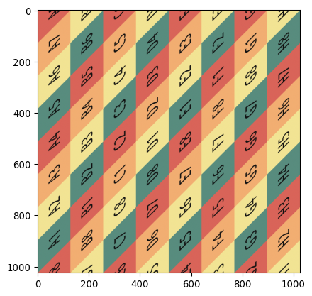

Texture mapping is the process of applying a 2D image (the “texture”) to a 3D surface.
Below we apply a texture to a torus mesh using Open3D. The texture will be generated by applying a linear map (e.g., the cat map, Dehn twist) to an image, and then we will calculate the UV coordinates for the torus mesh to ensure that the texture wraps around it correctly. Finally, we will visualize the textured torus and export it as an OBJ file that can be imported into other 3D software like Blender.
Packages & Modules
# main 3d viewing and mesh manipulation libraryimport open3d as o3dimport open3d.visualization.rendering as rendering# for image manipulationimport numpy as npfrom numpy import pi, sin, cosimport skimage.io as sioimport skimage.transform as stfrom skimage import io, img_as_ubyte# plottingimport matplotlib.pyplot as plt# my module for applying the map to the image and coordinatesimport apply_image_mapimport importlib # for reloading modules during developmentimportlib.reload(apply_image_map)
<module 'apply_image_map' from '/Users/josh/Google Drive/Research/apply_image_map.py'>
– – M A T E R I A L – –
# the material record is where we specify the texture and shader for the meshmaterial = rendering.MaterialRecord()material.shader ='defaultUnlit'
## -- the cat map# map_name = "dehn_twist"# M = np.array([[1,1],[1,2]])## -- the identity map# map_name = "identity"# M = np.array([[1,0],[0,1]])## -- dehn twist# map_name = "dehn_twist"#M = np.array([[1,1],[0,1]])## -- period 3 mapmap_name ="period_3_map"M = np.array([[0,1],[-1,-1]])#print(f'\n --- {map_name} --- \n')
--- period_3_map ---
– – M A P – S E T T I N G S – –
# # iterations of the map ## 30 iterations of the cat map makes a good picture, # can see the mixing but also open/continuity # 192 is the period for 256x256 image# the period for 512x512 image is 384?# the period for 800x800 image is 600?# the period for 1024x1024 image is 768?# num_its = 96 # half period# num_its = 48 # quarter period# num_its = 24 # eighth period# num_its = 192 # sixteenth periodnum_its =1# identity map, no iterations
– – G R I D – S E T U P – –
# # xx,yy are the pixel coordinates## notice the -1 below to keep integer valued xx,yy# with kw-1 below, the spacing is 1 pixel apartkw = output_shape[0]kh = output_shape[1]xgrid = np.linspace(0,kw-1,kw)ygrid = np.linspace(0,kh-1,kh)col,row = np.meshgrid(xgrid,ygrid)
– – A P P L Y – M A P – –
# # apply the map num_its times# # placeholders for iterated image and coordinatesimg_after = img# resolution is much better if we mod first, which in general is not the same# but works in this case (linear map, integer entries, square image) because the map is periodic and the period divides the resolution) # in case we want to iterate the map and compare#for i in range(0,num_its): MM = np.mod(np.linalg.matrix_power(M,num_its), img_res)X,Y,Z,img_after,col,row = apply_image_map.mod(img.shape[0],MM,img_after,col,row,3)# set the material image to the final mapped imagematerial.albedo_img = o3d.geometry.Image((img_after*255).astype(np.uint8))## apply mapping to image without mod#I = img_as_ubyte(img)#for i in range(0,3):# im = apply_image_map.no_mod(I,np.linalg.matrix_power(M,i))# plt.figure()# plt.imshow(im)# plt.title(f'Image after {i} iterations')# plt.axis('off')# plt.show()# sio.imsave(f"torus/assets/flat_img_{i}.png",im)
– – V I S U A L I Z E – M A P P E D – I M A G E – –
Image of the initial image under the transformation:
where the matrix is \[M = \begin{bmatrix} 0 & 1 \\ -1 & -1 \end{bmatrix}\]
plt.imshow(img_after)

Everything above is work done on a square image that we will use as a texture. Below we will set up the torus mesh and calculate the UV coordinates to apply this texture to the torus.
– – T O R U S – M E S H – S E T U P – –
mesh = o3d.geometry.TriangleMesh.create_torus()# R is the (default) major radius (distance from center of donut to center of tube)R =1.0
– L E A R N H O W V E R T I C E S M A P T O T R I A N G L E S – – –
These lines help you understand how the vertices of the mesh are connected to the trianlges.
# assign the texture to the mesh using the triangles of the meshtriangles = np.asarray(mesh.triangles)# The vertex index you are looking for (e.g., the 10th vertex)target_v_idx =0# 1. Find the boolean mask where the index exists in any of the 3 columnsmask = np.any(triangles == target_v_idx, axis=1)# 2. Get the actual indices of those trianglessharing_triangles_indices = np.where(mask)[0]print(f"Vertex {target_v_idx} is shared by triangles: {sharing_triangles_indices}")# 3. Optional: Get the actual vertex IDs of those neighboring trianglesneighbor_triangles = triangles[sharing_triangles_indices]print("These triangles connect these vertices:\n", neighbor_triangles)
– – – C A L C U L A T E U V S F O R T O R U S M E S H – – –
verts = np.asarray(mesh.vertices)# Distance from the center of the donut in the XY planedistance_xy = np.sqrt(verts[:, 0]**2+ verts[:, 1]**2)# 1. Clean angles (No manual seam_ix shift needed anymore)u_angle = np.arctan2(verts[:, 1], verts[:, 0])v_angle = np.arctan2(verts[:, 2], np.sqrt(verts[:, 0]**2+ verts[:, 1]**2) - R)# 2. Normalize to 0-1u_norm = (u_angle + np.pi) / (2* np.pi)v_norm = (v_angle + np.pi) / (2* np.pi)# when the u_norm coordinates decrease, shift them up by 1 to prevent large jumps# the u coordinates should be monotonically increasingu_diff = np.diff(u_norm, prepend=u_norm[0])decreasing_mask = u_diff <0first_drop = np.where(decreasing_mask)[0][0]u_norm[first_drop:] +=1.0
3. Create initial UVs
v_uvs = np.stack([u_norm, v_norm], axis=1)triangles = np.asarray(mesh.triangles)final_uvs = v_uvs[triangles.flatten()].reshape(-1, 3, 2)# 4. The Snapping Loopfor i inrange(len(final_uvs)):for d inrange(2): # 0 = U, 1 = V col = final_uvs[i, :, d]# Calculate the internal spread of the triangleif np.ptp(col) >0.8: # ptp is "peak to peak" (max - min)# Find the "low" points (near 0) and shift them to the "high" side (near 1)# This makes the triangle sit entirely on the right/bottom edge of the map low_mask = col <0.2 final_uvs[i, low_mask, d] +=1.0# EXTRA STEP: Snap values very close to 0 or 1 to exactly 0 or 1# This prevents the "sub-pixel" crack you are seeing final_uvs[i, :, d] = np.where(np.abs(final_uvs[i, :, d] -1.0) <1e-4, 1.0, final_uvs[i, :, d]) final_uvs[i, :, d] = np.where(np.abs(final_uvs[i, :, d] -0.0) <1e-7, 0.0, final_uvs[i, :, d])# 5. Applymesh.triangle_uvs = o3d.utility.Vector2dVector(final_uvs.reshape(-1, 2))mesh.remove_duplicated_vertices()mesh.compute_vertex_normals()# Flatten back for Open3Dmesh.triangle_uvs = o3d.utility.Vector2dVector(final_uvs.reshape(-1, 2))
normalize
uvs = np.asarray(mesh.triangle_uvs)# normalize uvs to [0,1]uvs_min = uvs.min(axis=0)uvs_max = uvs.max(axis=0)uvs_range = uvs_max - uvs_minuvs_normalized = (uvs - uvs_min) / uvs_rangemesh.triangle_uvs = o3d.utility.Vector2dVector(uvs_normalized)uvs = np.asarray(mesh.triangle_uvs)# Gently squeeze the U coordinates to prevent the edge-wrap overlapuvs[:, 0] = uvs[:, 0] *0.99mesh.triangle_uvs = o3d.utility.Vector2dVector(uvs)
– – – F I X S E A M C R O S S I N G T R I A N G L E S – – –
# # attempt to fix seam wrapping# Get the UVs as a numpy arrayuvs = np.asarray(mesh.triangle_uvs)# Iterate through the array in jumps of 3 (each triangle)a =0for i inrange(0, len(uvs), 3): tri_uvs = uvs[i:i+3]# Check the horizontal (U) spread of this triangle u_min = np.min(tri_uvs[:, 0]) u_max = np.max(tri_uvs[:, 0])# If the spread is huge (e.g., > 0.8), it's a "Seam Crosser"if (u_max - u_min) >0.8:# For any corner in THIS triangle that is near 0, make it 1# print('Seam crosser triangle detected at index:', i // 3) a =1for j inrange(3):if uvs[i + j, 0] <0.2: uvs[i + j, 0] +=1.0# update the mesh UVsmesh.triangle_uvs = o3d.utility.Vector2dVector(uvs)# ensure the mesh has normals (crucial for it to look 3D in viewers)mesh.compute_vertex_normals()
TriangleMesh with 600 points and 1200 triangles.
– – – A D D R E D D O T S A T F I X E D P O I N T S – – –
# Open3D textures are stored as o3d.geometry.Image# 3. Define your points and dot sizepoints = [[0, 0], [img_res//3, img_res//3], [2*img_res//3, 2*img_res//3]]dot_radius = [10, 8, 6] # radius in pixelsdot_color = np.zeros((3, 3)) # 3 colors for 3 pointsdot_color[0] = [1, 0, 0] # Bright Reddot_color[1] = [0, 0, 0] # Bright Reddot_color[2] = [1, 1, 1] # Bright Red# loop through 3 colors with different dot_radii# and then through points and "paint" the arrayfor j inrange(3):for y, x in points:# We use a slice to make a small square so the dot is visible# We use np.clip to ensure we don't go outside the 1024 boundary y_min, y_max =max(0, y-dot_radius[j]), min(1023, y+dot_radius[j]) x_min, x_max =max(0, x-dot_radius[j]), min(1023, x+dot_radius[j]) img_after[y_min:y_max, x_min:x_max,0:3] = dot_color[j]# 2. Update the Material Record (for the modern 'draw' call)# You must re-assign the modified image to the material propertymaterial.albedo_img = o3d.geometry.Image((img_after*255).astype(np.uint8))
– – – V I S U A L I Z E T H E T E X T U R E D M E S H – – –
This is how to visualize a texture mesh using Open3D. The material below is created using the rendering.MaterialRecord to specify the shader and texture. This viewer using an active python kernel, so you can interact with the mesh and see the texture applied in real time. You can also rotate the view to see how the texture wraps around the torus. To export the mesh with the texture for viewing outside of Open3D, see the next section below.
– – – E X P O R T T H E M E S H + T E X T U R E – – –
# Open3D uses the filename to determine the format# This will generate 'anosov.obj' AND 'anosov.mtl'# 1. Ensure the texture is in the correct format (uint8)# If it's a numpy array, convert it to o3d Image# Mirror the image left-to-right# flipped_texture = np.fliplr(material.albedo_img).astype(np.uint8) # mesh.textures = [o3d.geometry.Image(flipped_texture)]mesh.textures = [material.albedo_img]# Get the UVs as a numpy arrayuvs = np.asarray(mesh.triangle_uvs)# Flip the V coordinate (the second column)# uvs[:, 0] is U, uvs[:, 1] is Vuvs[:, 1] =1.0- uvs[:, 1]# Re-assign the flipped UVs back to the meshmesh.triangle_uvs = o3d.utility.Vector2dVector(uvs)# NOW exporto3d.io.write_triangle_mesh("torus_for_blender.obj", mesh, write_triangle_uvs=True)# FYI - This effectively turns the mesh inside-out# mesh.triangles = o3d.utility.Vector3iVector(np.asarray(mesh.triangles)[:, [0, 2, 1]])# Then re-calculate the lighting normalsmesh.compute_vertex_normals()# 2. Assign Material IDs (This is what triggers the .mtl reference)# Without this, the exporter thinks there's no material to write!num_triangles =len(mesh.triangles)mesh.triangle_material_ids = o3d.utility.IntVector([0] * num_triangles)o3d.io.write_triangle_mesh(f"{filename}_res_{img_res}_iter_{num_its}_{map_name}.obj", mesh, write_ascii=True, write_triangle_uvs=True)
[Open3D WARNING] Write OBJ can not include triangle normals.
[Open3D WARNING] Write OBJ can not include triangle normals.